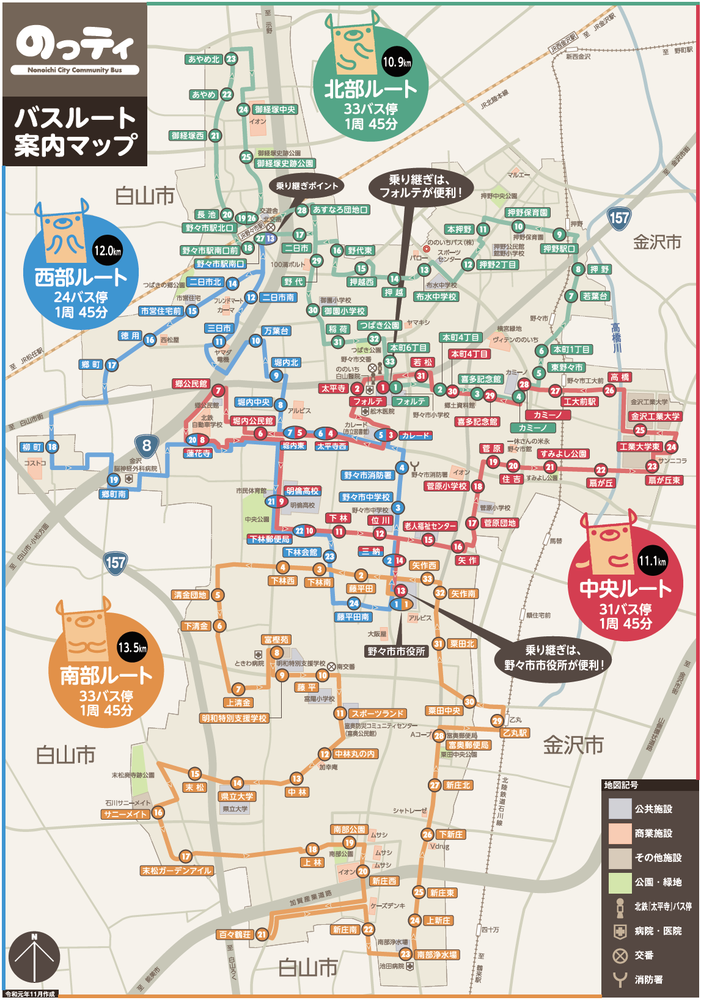

<!DOCTYPE html>
<html lange="ja"></html>
 <head>
 <mate cherset="utf-8"></mate>  
<link rel="stylesheet" type="text/css" href="map_TEIRYUJO.css">
</head>
<body>

    
    
    <div style="position:absolute; top:1px; right: 130px"><h3>北部、中央ルート乗り換えおすすめ地点</h3></div>
     <div style="position:absolute; top:45px; right: 10px"><iframe src="https://www.google.com/maps/embed?pb=!1m18!1m12!1m3!1d3205.897922045533!2d136.60658831502295!3d36.53245698000463!2m3!1f0!2f0!3f0!3m2!1i1024!2i768!4f13.1!3m3!1m2!1s0x5ff835bca6f50339%3A0xf519e224907ff33e!2z44OV44Kp44Or44OG!5e0!3m2!1sja!2sjp!4v1602826623976!5m2!1sja!2sjp" width="600" height="450" frameborder="0" style="border:0;" allowfullscreen="" aria-hidden="false" tabindex="0"></iframe></div>

    <div style="position:absolute; top:445px; right: 130px"><h3>中央、西部、南部ルート乗り換えおすすめ地点</h3></div>
    <div style="position:absolute; top:495px; right: 10px"><iframe src="https://www.google.com/maps/embed?pb=!1m18!1m12!1m3!1d3206.432747491378!2d136.60756001502244!3d36.51955288000734!2m3!1f0!2f0!3f0!3m2!1i1024!2i768!4f13.1!3m3!1m2!1s0x5ff835ee704311a1%3A0xe3ffb98cc4b8b3cc!2z6YeO44CF5biC5biC5b255omA!5e0!3m2!1sja!2sjp!4v1602826878309!5m2!1sja!2sjp" width="600" height="450" frameborder="0" style="border:0;" allowfullscreen="" aria-hidden="false" tabindex="0"></iframe></div>
    
    
    
</body>